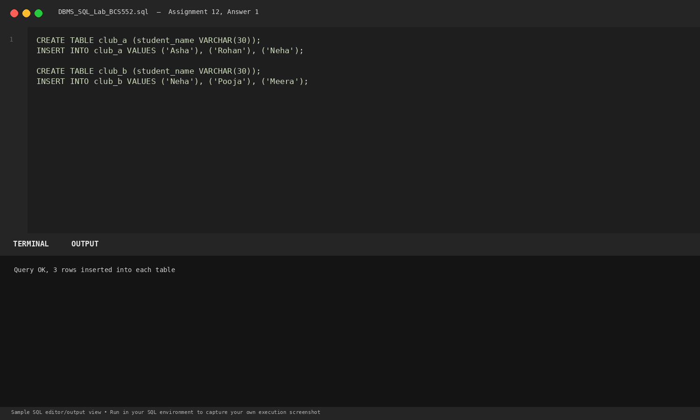
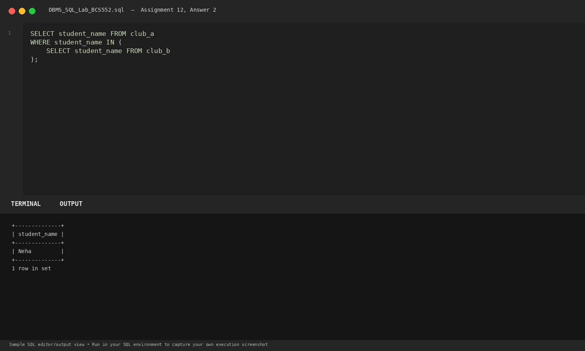
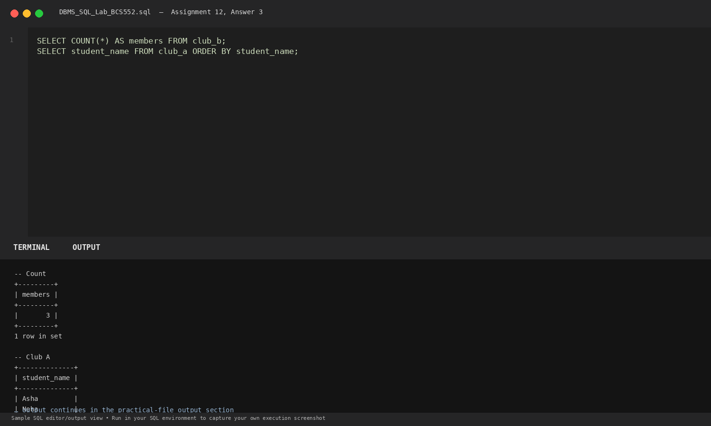

Task 1
Set up club tables
SQL Query
CREATE TABLE club_a (student_name VARCHAR(30));
INSERT INTO club_a VALUES ('Asha'), ('Rohan'), ('Neha');
CREATE TABLE club_b (student_name VARCHAR(30));
INSERT INTO club_b VALUES ('Neha'), ('Pooja'), ('Meera');Database Output
Query OK, 3 rows inserted into each table
Explanation: Sets up two distinct club rosters to analyze membership overlap.
Terminal Screenshot Preview

Task 2
Find names common to both clubs with a subquery
SQL Query
SELECT student_name FROM club_a
WHERE student_name IN (
SELECT student_name FROM club_b
);Database Output
+--------------+ | student_name | +--------------+ | Neha | +--------------+ 1 row in set
Explanation: The inner query selects student names from club_b; the outer query evaluates club_a students against that set.
Terminal Screenshot Preview

Task 3
Count club B members and list club A
SQL Query
SELECT COUNT(*) AS members FROM club_b;
SELECT student_name FROM club_a ORDER BY student_name;Database Output
-- Count +---------+ | members | +---------+ | 3 | +---------+ 1 row in set -- Club A +--------------+ | student_name | +--------------+ | Asha | | Neha | | Rohan | +--------------+ 3 rows in set
Explanation: Counts club_b members and produces an ordered list of students enrolled in club_a.
Terminal Screenshot Preview
